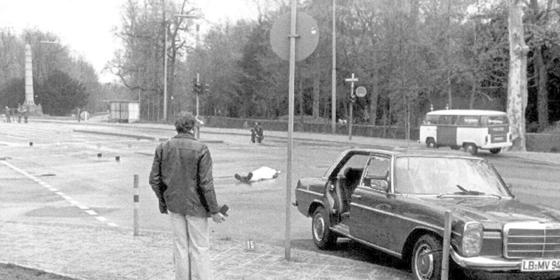

Attentat auf Siegfried Buback
Am 7. April 1977 wurde der Generalbundesanwalt Siegfried Buback (57) in Karlsruhe ermordet. Dieses Attentat wurde in der Bietigheimer Zeitung als “schwerstes Attentat der deutschen Nachkriegsgeschichte” bezeichnet.
Der Mordanschlag auf Buback fand während dessen Fahrt von seinem Haus in Neurath (bei Karlsruhe) zum Bundesgerichtshof in Karlsruhe statt, als das Auto, in dem außerdem Bubacks Fahrer Wolfgang Göbel (30) und Georg Wurster (43), ein Justizhauptwachtmeister, der für den Fuhrpark der Bundesanwaltschaft zuständig war (und nur gerufen worden war, weil der Wagen davor nicht angesprungen war).
Um 9.15 Uhr stoppte das Fahrzeug wegen einer roten Ampel an der Ecke Linkenheimer Allee/Moltkestraße (in unmittelbarer Nähe des BGH). Als die Ampel auf grün umschaltete, wurde das Feuer auf das Auto von zwei Personen auf einem Motorrad (Suzuki GS 759; Kennzeichen: LU - LN 8) eröffnet. Göbel wird durch die Schüsse der Maschinenpistole sofort getötet, Buback starb um 9.20 Uhr auf dem Rasen am Straßenrand, wohin ihn Passanten gelegt hatten, und Wurster wurde lebensgefährlich verletzt.

Um 9.16 Uhr fuhr das Motorrad um das Auto mit den sterbenden Insassen, welches zum Stehen gekommen war, herum und und fährt dann in schnellerer Fahrt Richtung Stadtmitte. Um 9.18 Uhr (drei Minuten nach dem Attentat) traf die Karlsruher Polizei ein und löste eine Ringfahndung um den Tatort in ganz Karlsruhe aus und um 10.30 Uhr wurde die Fahndung als sog. “Alarmfahndung” auch auf das ganze Bundesgebiet ausgedehnt.
Um 11.40 Uhr teilte die Polizei nach der Vernehmung eine jugoslawischen Zeugen mit, dass es sich bei den Tätern um zwei jüngere Personen - eine der beiden möglicherweise eine Frau - handle. Der Beifahrer habe die Tatwaffe aus einer vor ihm liegenden Tasche geholt. Um 12 Uhr forderte Bundesinnenminister Werner Maihofer verstärkte Grenzkontrolle im Zuge der Alarmfahndung an.
Um 12.45 Uhr wurde bekanntgegeben, dass die Täter in einer Tankstelle etwa 300 Meter entfernt vom Tatort auf das Auto Bubacks gewartet hätten. In Stammheim wurden wegen der Geschehnisse dieses Tages die Haftbedingungen für Baader, Ensslin und Raspe erheblich verschärft.
Die Leichen von Buback und seinem Fahrer wurden um 12.57 Uhr abtransportiert.. Um 14.15 Uhr wurde eine erste verdächtige Person festgenommen.
Um 14.30 Uhr fand eine Pressekonferenz in Stuttgart statt, bei der Innenminister Karl Schiess Folgendes bekannt gab:
● das Tatfahrzeug wurde an der Autobahn bei Karlsruhe-Wolfartsweiher gefunden; das Kennzeichen sei eine Doublette
● Buback habe einen ständigen Begleitschutz abgelehnt, obwohl er als gefährdete Person in die Gefahrenstufe 1 eingeordnet war
● Georg Wurster habe das Attentat überlebt
Um 17.30 Uhr ging ein anonymer Anruf bei der Deutschen Presseagentur in Bonn ein, in dem sich die “Aktionsgemeinschaft Ulrike Meinhof” zu dem Anschlag bekannte. Von der Bundesregierung wurden 200.000 Mark zur Ergreifung der Mörder ausgesetzt.
In der Öffentlichkeit wird der Anschlag persönlich genommen. “Buback hält für uns alle den Kopf hin”, so ein Kommentar in der Bietigheimer Zeitung, zwei Tage nach dem Anschlag und damit in einer noch aufgeheizten Stimmung. Nicht nur Privatpersonen, auch Parteien meldeten sich zu Wort. Der SPD-Ortsverein Bietigheim-Bissingen warnte vor allem Jugendliche vor Sympathie zu den Attentätern, da Terror zur Durchsetzung politischer Ziele nicht tolerierbar sei. Doch nicht nur die Attentäter standen schlecht da. Ein großer Streit entfacht darüber, ob Buback nun weniger oder mehr Polizeischutz wollte. Falls ersteres, warum hat die Regierung ihn nicht trotzdem besser geschützt? Falls zweiteres, warum hat er diesen nicht bekommen? Die Situation war schon kritisch, aber zusätzlich waren nach der Verhaftung Siegfried Haags aus Aurich, Andreas Baaders Rechtsanwalt, Pläne von einer Entführung eines Bundesanwalts oder -richters bekannt geworden. Hätte Innenminister Schiess trotz Bubacks angeblicher Ablehnung des Polizeischutzes durchgreifen sollen? Er hatte speziell ausgebildete Polizisten gefordert, angeboten wurden ihm “nur” gewöhnliche Personenschützer.